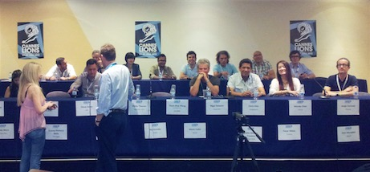

Wendy Chan started her career in Hong Kong and has 20 years of experience as a creative in advertising (14 years in China). She has very solid experience in above-the-line, below-the-line and strategy.
She has won more than 40 awards, both internationally and in China, including China’s 1st Cannes Lion, One Show, Spike, London International Advertising Award, Times, Long Xi, China Advertising Festival. In 2007 she was selected as China's top 10 Art Directors. In 2011 she was invited to be Jury in Cannes in Print category.
Achivement
11
Ariel Big Stain: Cannes - 1 Bronze + 4 Finalist, Spikes - 2 Gold, 1 Silver, 1 Bronze China Ad Festival - Grand Prix,Longxi - Best of Outdoor, Catch Award Gold
09
Ariel Light bulb: Cannes - Bronze, China 4A - Silver, 1 Bronze, Long Xi - Finalist Spike - Finalist
09
Ariel Defence: Cannes - Finalist
08
China Art Director Top10
08
Ariel Crab, Chicken, Fish: London Int Ad Awards - Silver, China Ad Festival - Silver
08
Ariel Red Wine, Chilli, Ketchup: Long Xi - Finalist, China Ad Festival - Silver
07
H&S Reading your hair: 14th China Adfest - Bronze, Times - Finalist
06
H&S Metamorphosis: Guangdong Ad Awards - Finalist
05
H&S Tony in black: Guangdong Ad Awards - Finalist
02
H&S Brush: HK4A's - Merit
02
H&S Metero:HK4A's - Bronze, Times - Finalist
01
H&S Chinese New Year: 8th China Ad Festival - Merit
01
H&S Christmas Tree: 8th China Ad Festival - Merit
01
Daktarin, Robber, Foot Massage: HK 4A's Best Single Print - Bronze
01
H&S, Cross Full stop, Flags: 48th Cannes - Bronze, 02 Times - Silver, HK 4A's - 1 Merit, 2 Bronze, 3rd HK Long Xi - Bronze, AD Festival - Finalist
99
Emirates Airline: London Int Ad Awards - Finalist
98
A&M Year of Tiget Creative Challenge: First Runner Up
96
Sheraton: One Show - Merit
Cannes Jury
Guest lecturer in agencies and university